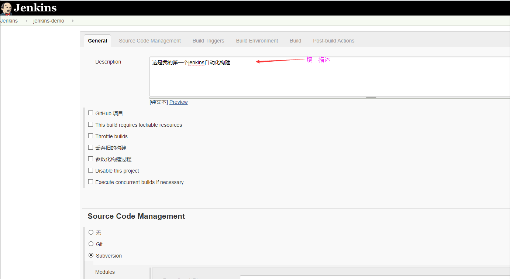

前置准备：安装JDK、安装Tomcat、安装Maven、安装SVN
点击链接：安装JDK教程
点击链接：安装Tomcat
点击链接：安装Maven
点击链接：安装SVN
第一步：添加tomcat用户（假设用户名密码为tomcat_user/123456），修改tomcat目录下的/conf/tomcat-users.xml文件
说明，该用户是为了jenkins能够将应用部署到tomcat容器上用的

修改完成后需要重启tomcat
第二步：创建版本库库并添加svn用户（假设用户名密码为svn_user/123456，需要有版本库的读写权限），参考下面教程
说明，该用户是为了jenkins能够从svn版本库上拉取代码用的
点击链接：创建并配置版本库
修改完成后需要重启svn服务（svnserve）
第三步：将jenkins的war包放入tomcat的/webapps目录下并重启tomcat

第四步：首次进入jenkins
在浏览器中输入：http://ip:port/jenkins访问jenkins
 说明，这里会有一些插件安装失败，可以后续再安装
说明，这里会有一些插件安装失败，可以后续再安装


第五步：jenkins系统初始化配置
全局安全设置
全局工具设置
插件管理

第六步：创建maven的war工程并上传到svn版本库中
 点击链接，查看如何将项目上传到svn版本库中
点击链接，查看如何将项目上传到svn版本库中
第七步：在jenkins中创建一个新的任务


第八步：配置构建完成后的操作（部署到tomcat容器中）
第九步：配置钩子程序（提交到svn版本库之后立即构建并添加到tomcat容器中）
自动化构建的原理：jenkins可以配置通过访问url地址触发构建，我们需要在svn配置一段钩子程序，让钩子程序访问触发jenkins构建的url地址，这样在我们提交代码 到svn版本库的时候就可以自动触发构建了
先配置触发jenkins构建任务的url地址
然后配置svn的钩子程序，进入到svn版本库中的hooks文件夹中
最后验证一下，如果提交代码到svn版本库的时候可以触发构建过程，则说明成功了